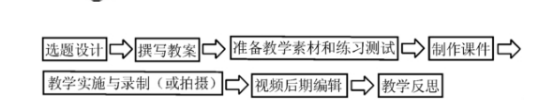

第一步，针对微课主题，进行详细的教学设计，形成教案；第二步，利用黑板或白纸展开教学过程，利用便携式录像机（或手机）将整个过程拍摄下来；第三步，对视频进行简单的后期制作，可以进行必要的编辑和美化。
第一步，针对所选定的教学主题，搜集教学材料和媒体素材，制作PPT课件；第二步，在计算机中安装录屏软件（如CamtasiaStudio、Snagit或CyberlinkYouCam）；第三步，在电脑屏幕上同时打开视频录像软件和教学PPT（Word、画图工具软件或手写板输入软件等），执教者带好耳麦，调整好话筒的位置和音量，并调整好PPT界面和录屏界面的位置后，单击“录制桌面”按钮，开始录制，执教者一边演示一边讲解，可以配合标记工具或其他多媒体软件或素材，尽量使教学过程生动有趣。第四步，对录制完成后的教学视频进行必要的编辑和美化。
主要过程如下：
（ 1 ）选题设计。